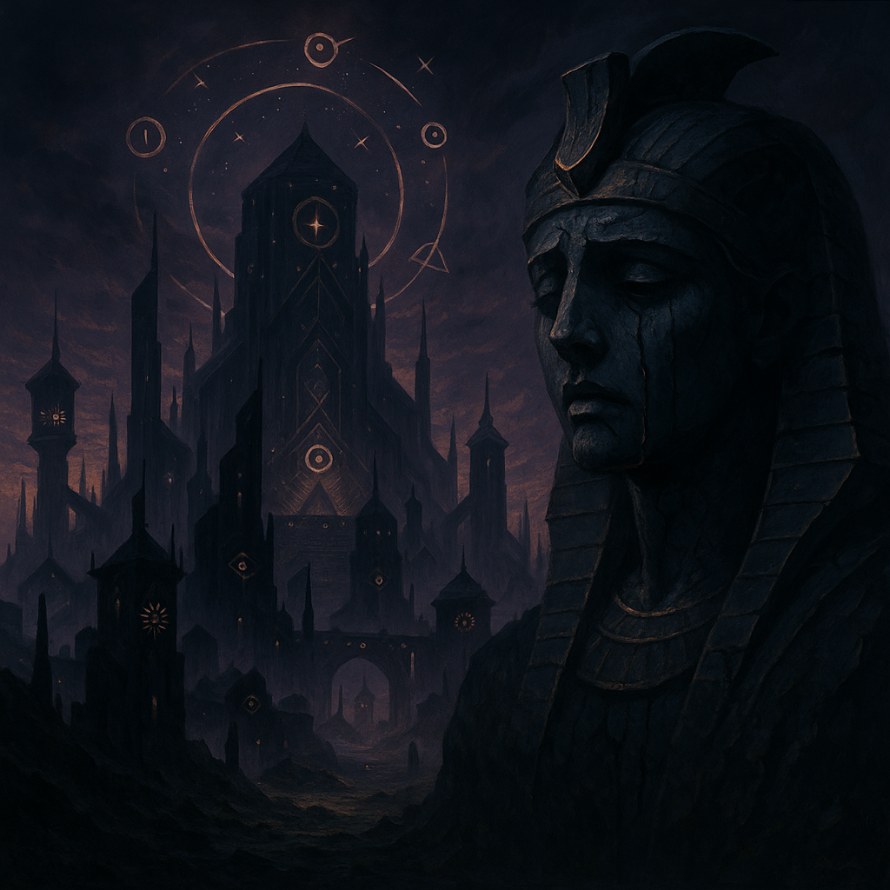
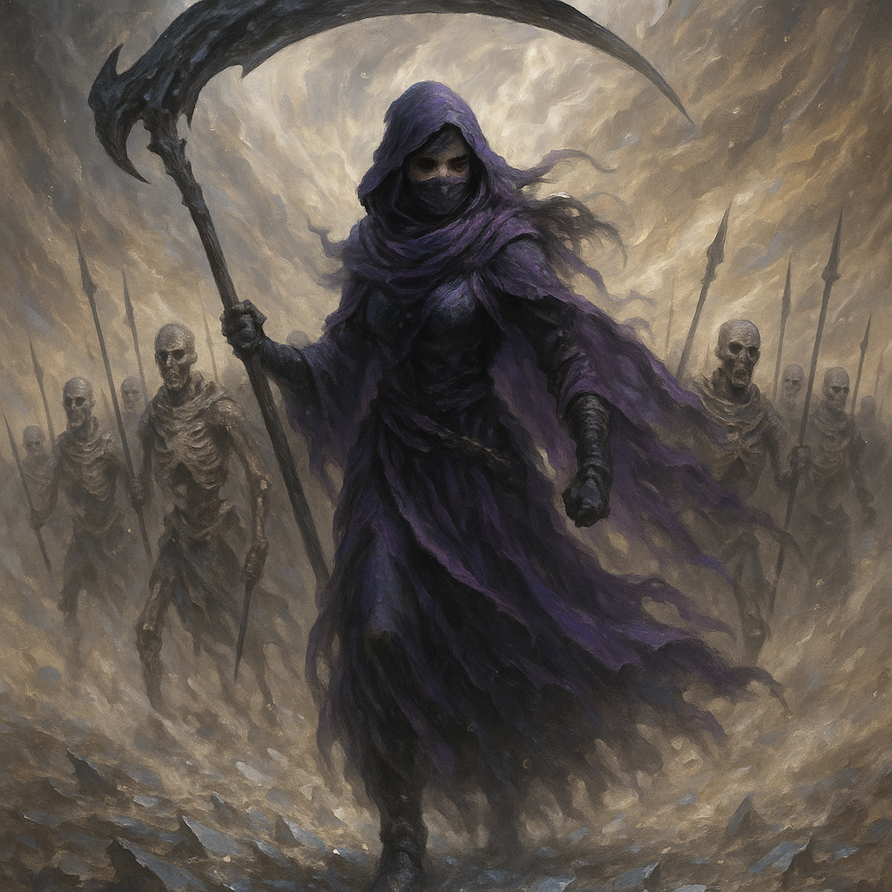

꧁༺ 𝔑𝔢𝔠𝔯𝔬𝔪𝔞𝔫𝔠𝔢𝔯 ༻꧂
𝔗𝔥𝔞𝔱 𝔯𝔦𝔤𝔥𝔱 𝔟𝔢𝔩𝔬𝔫𝔤𝔰 𝔱𝔬 𝔪𝔢𝔪𝔬𝔯𝔶, 𝔞𝔫𝔡 𝔱𝔥𝔦𝔰 𝔦𝔰 𝔪𝔢𝔪𝔬𝔯𝔶 𝔴𝔥𝔢𝔫 𝔦𝔱 𝔰𝔱𝔬𝔭𝔰 𝔯𝔢𝔮𝔲𝔢𝔰𝔱𝔦𝔫𝔤 𝔭𝔢𝔯𝔪𝔦𝔰𝔰𝔦𝔬𝔫."
☽ 𝐋𝐄𝐆𝐀𝐂𝐘 ☾
Long before the world cracked and bled, there stood the Ishtari Empire:
A civilization of impossible beauty and monstrous ambition. They were mages who called comets home,
who built cities that whispered to the stars. Their laws were written in edicts—cosmic contracts
bound by sacrifice. Their greatest art? Necromancy. Practiced not to desecrate the dead,
but to honor them.
But they fell. By hubris. By betrayal. By something so vast it left only ruins and haunted sand in its wake.
Their blood scattered into the nomadic tribes that wander the sands, forgotten heirs of starlight.
Yet the magic still lingers, buried in bone, waiting to be remembered.
Violet, born of a dying line and an impossible spell, is the last echo of their will.
Not a princess. Not a savior. But a flawed god built in grief’s image. And when she learns what the Ishtari did -
what they became to keep their power, she won’t just reclaim their legacy.
She’ll redefine it.
🕯 𝐈𝐍𝐕𝐎𝐂𝐀𝐓𝐈𝐎𝐍 🕯
In a dying desert world where wealth devours life and empires mistake control for order, Ishtar rises.
Not from privilege...
... but from the grave.
Once known as Violet, she was a daughter of ashes and ruin, raised in exodus and forgotten by history.
Until the day she whispered memory into death.
Now called Necromancer by monarchs, Goddess by the oppressed, and Death by those with something to lose - she walks the dunes with a scythe forged of agony, grief, hatred, and soul-fire.
Her empire is not built on gold. It is built on every forgotten name. On every lie she severs like a neck. On the risen corpses of her would-be enemies, and the many unfortunate souls caught within the wake.
☠ 𝐏𝐀𝐘𝐌𝐄𝐍𝐓 𝐈𝐍 𝐏𝐋𝐀𝐓𝐈𝐍𝐔𝐌 ☠
The city burned the desert clans to keep their vaults full. So she robbed their bank with a horde of undead, collecting in blood and platinum.
But the metal wasn’t just convenient. It was new. Traceable. A trap she now twists back on her hunters.
The law man who follows her has good reason: she’s left hundreds dead and nary a body left to prove the number. But what happens when the goddess he hunts sees the face of the daughter she murdered?
What happens if the necromancer twists... and decides to rewrite justice in her own name?
